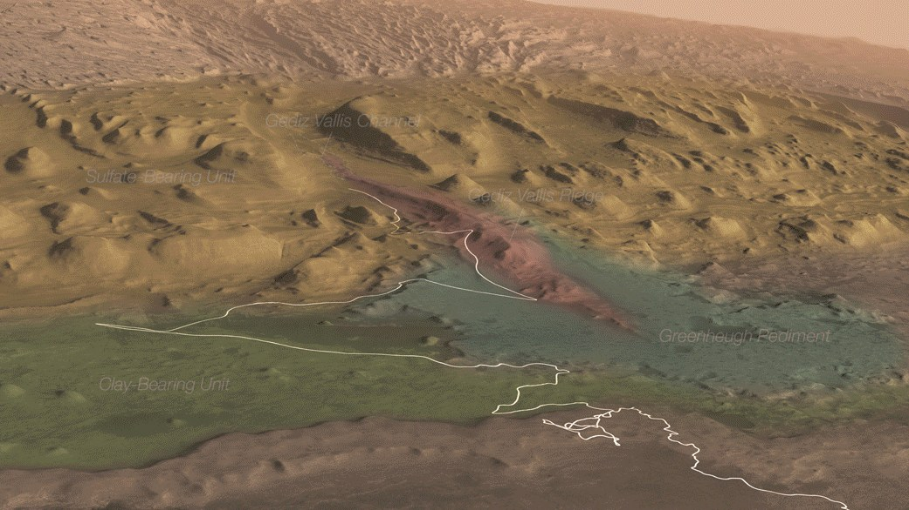
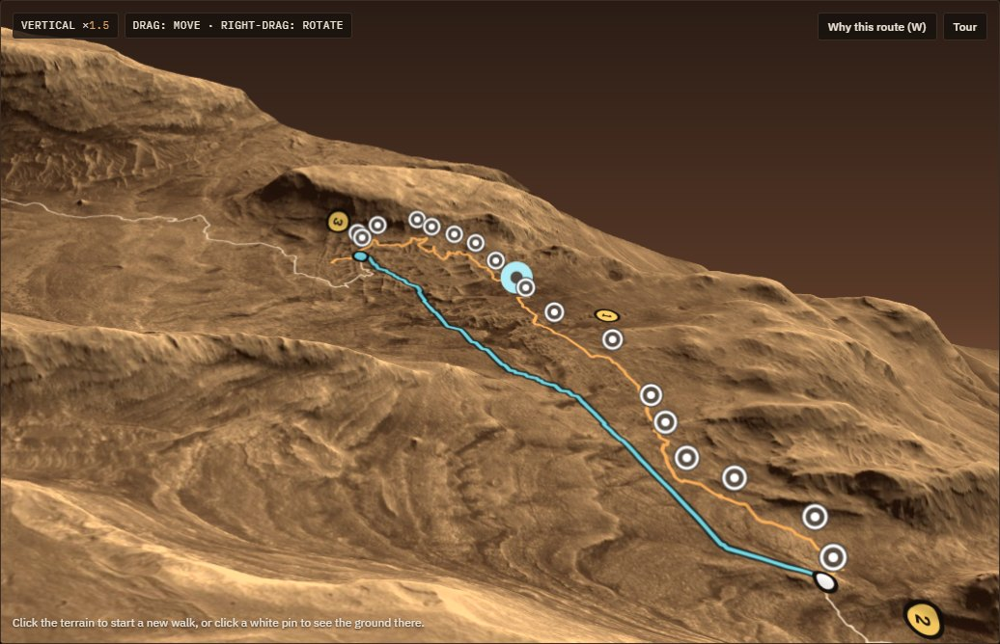

60-second guided tour
Six steps, in the order of the demo. Each link opens the page where that step happens.
Overview and layers
Open the twin and switch the map layers (slope hazard, Curiosity's drive path, science stops, hydrated minerals, iron oxides); click any cell for its temperature, dose and sky view.
Why: shows the real HiRISE terrain and which hazards sit where.
Open the twinPlan a route, read the GO
Click a start and an end on the terrain (or press a route button) and read the GO or NO-GO under the route stats, with the deciding flight rule; raise the slope slider past 25° and the planner may propose a route the validator rejects.
Why: the safety check is independent of the planner and names the flight rule it applied.
Plan in the twinA* against RL
Compare the A* route with the reinforcement-learning route.
Why: both routes face the same validator, so a clever planner cannot talk its way past a rule.
Compare plannersFirst-person walk and helmet HUD
Press walk and watch the visor numbers change along the route.
Why: the HUD matches the Python astronaut model within 0.25%, so what you see is what was checked.
Start the walkDust event, re-plan, light-time
In mission control, press Play: the SIMULATED dust event appears, the walker re-plans at once and the Earth light-time countdown runs until the ground reply.
Why: a crew must act locally because the answer from Earth is minutes away. The event is SIMULATED.
Watch the eventMission-control replay
Scrub the time conductor and watch every tile, the map and the countdown follow the log.
Why: the same mission, seen the way a ground team would see it.
Open mission control
Validation scoreboard
Results of the checks run on this build.
Loading scoreboard...
NASA's own route map vs MARSWALK
The NASA challenge lists the Curiosity route animation for lower Mount Sharp as an example. Here it is beside our twin's planned route.


NASA's map shows where the rover's science team wants to go, as labelled regions at kilometre scale. MARSWALK plans a suited walk at 4 m cells, checks it against flight rules and says GO or NO-GO. The two views overlap on the same mountain, not on the same ground: NASA's map covers the clay-bearing unit up to Gediz Vallis, while our twin covers the later boxwork stretch.
Source: NASA Science page for the map and animation; JPL: Video, Fly over Mount Sharp on Mars (flyover video, also on mars.nasa.gov). The NASA image is used unaltered except for taking one frame of the GIF; it is not a MARSWALK product.
What is real and what is not
Every number in the demo carries one of these labels.